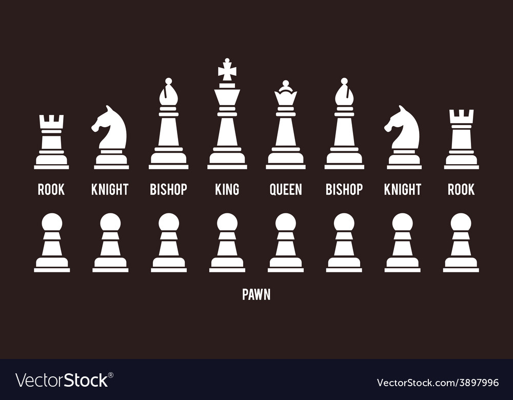

Rules
Everything you need to know to play your first game
Chess is a complex game with many pieces and rules. Here's a short video from Danny Rensch, a Chess International Master, walking through the basics — or read on below.
Watch: how to play
Equipment
To play chess, you need a set of chess pieces and a chessboard. A chess clock is required for timed games, and players often use a score sheet to record their moves.
A chess piece set has two armies of pieces, each with eight pawns, two knights, two bishops, two rooks, a queen, and a king. Players tell their armies apart by color: light and dark pieces. Whatever the actual color, the light side is called White and the dark side Black — after the ivory and ebony pieces used historically.
The pieces
There are six types of chess pieces: the pawn, knight, bishop, rook, queen, and king. Each moves differently and carries a different point value.

Pawns are worth one point, knights and bishops three, rooks five, and the queen nine. The king is priceless — if you "lose" the king, you lose the game. Points don't decide the winner, but they give you a rough sense of who's ahead.
Setup
When you set up the board, the bottom-right square must be light. Rooks go in the corners, pawns form a straight line in front of them, and knights sit beside the rooks with a pawn in front. Bishops go beside the knights, the queen takes the square matching her own color, and the king takes the last square. Once set up, it should look like this:

How each piece moves
- Pawn — moves one square forward, or two on its first move, and never moves backward. It captures one square diagonally — the only piece that captures differently than it moves. It's also the only piece that can use the special en passant rule, covered below.
- Knight — moves two squares in one direction and one square perpendicular to that, tracing an "L" shape. Knights capture by landing on a piece, and are the only piece that can jump over others.
- Bishop — moves any number of squares diagonally, so it can never leave the color of square it started on. Each player starts with one light-squared and one dark-squared bishop.
- Rook — moves any number of squares vertically or horizontally. Along with the king, it's the only piece involved in castling, explained below.
- Queen — the most powerful piece on the board. It moves diagonally, horizontally, or vertically, any number of squares, as long as nothing blocks it.
- King — moves one square in any direction, and can take part in castling alongside a rook.
Check and checkmate
When a player's king is attacked by an enemy piece, the king is in check. The attacked player must protect the king — by blocking with a piece, moving the king to safety, or capturing the attacker. If none of those are possible, the king is checkmated and the game is over. Checkmating your opponent is the whole goal of chess.
Special rules
Castling
Castling protects the king and develops a rook at the same time. The king moves two squares to one side, and the rook on that side jumps over it, landing right next to it. Castling is only legal if:
- Neither the king nor that rook has moved yet
- There are no pieces between them
- The king is not currently in check
- The king does not pass through or land on a square under attack
Pawn promotion
When a pawn reaches the far end of the board, it promotes into any higher-value piece — almost always a queen. This applies to both White's and Black's pawns when they reach the last rank facing them.
En passant capture
The trickiest rule in chess. A pawn can capture an enemy pawn "in passing" if:
- The capturing pawn is on its fifth rank (three ranks from where it started)
- An enemy pawn on an adjacent file moves forward two squares, landing right beside it
- The capture happens immediately on the very next move — otherwise the option is lost
If all three are true, the attacker may move one square diagonally onto the square just behind the enemy pawn, capturing it in the process.
How games end
A game of chess ends in a win, a loss, or a draw. You win by checkmating your opponent, or if they run out of time on the clock. You lose the same way, in reverse.
Draws happen more often, and in more ways: by mutual agreement, threefold repetition (the same position occurring three times), a dead position (neither side can possibly checkmate), the fifty-move rule (fifty moves pass with no capture and no pawn move), or stalemate (the player to move has no legal move, but isn't in check).